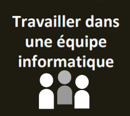

Travailler en équipe
Apprentissage critique du niveau 1 de la compétence 6
- Appréhender l'écosystème numérique
- Découvrir les aptitudes requises selon les différents secteurs informatiques
- Identifier les statuts, les fonctions et les rôles de chaque membre d'une équipe pluridisciplinaire
- Acquérir les compétences interpersonnelles pour travailler en équipe
Ressources
| Ressource | R1.02 Développement d'interface web | R1.08 Gestion de projet & des organisations | R1.09 Économie durable et numérique | R1.10 Anglais technique | R1.11 Bases de la communication | R1.12 Projet professionnel et personnel |
|---|---|---|---|---|---|---|
| Coefficient | 5 | 11 | 11 | 11 | 11 | 11 |
S1.06 Découverte de l'environnement économique et écologique
Il s'agit d'effectuer une présentation numérique du positionnement économique ou écologique de l'entreprise.
R1.02
Développement d'interfaces web
Développer des interfaces utilisateurs
L'objectif de cette ressource est d'apprendre les techniques de création de documents numériques sur le web en réponse à des besoins client. Les savoirs de référence suivants devront être étudiés :
- Spécifications d'interfaces utilisateur, maquettage (sketch, scénarios, persona...)
- Les technologies d'affichage du Web (ex: HTML, CSS...)
- Tester la conformité des sites Web aux standards d'accessibilité W3C / WAI (World Wide Web Consortium/Web Accessibility Initiative)
Cette ressource est une concrétisation de la compétence 1 avec le support de la compétence 5. En effet, l'apprentissage des interfaces web est une base pour réaliser un développement d'application tout en appréhendant les besoins du client et de l'utilisateur.
R1.08
Gestion de projet & des organisations
Aucun apprentissage critique...
L'objectif de cette resource est de découvrir l'organisation et la transformation numérique. Les savoirs de référence suivants devront être étudiés:
- Fondement des organisations (définition et finalité de 'organisation, environnement de l'organisation, acteurs et fonctions de l'organisation, culture d'entreprise, situer une activité dans une organisation)
- Caractéristiques stratégiques et structurelles de organisations (typologie des organisations, diagnostics et choix stratégiques)
- Enjeux de la transformation numérique des organisations (digitalisation des organisations, nouvelles formes de management, structure en réseau et entreprise virtuelle, responsabilité sociétale des entreprises)
La découverte de l'organisation permet une compréhension des enjeux et les besoins sous-jacents des projets internes et externes animant les acteurs qui la composent (compétence 5). Les défis organisationnels du XXle siècle, comme la transformation numérique des organisations, amènent à se questionner sur les évolutions informatiques et managériales dans le but de mieux appréhender l'écosystème numérique et le futur context professionnel (compétence 6).
R1.09
Économie durable et numérique
Aucun apprentissage critique...
L'objectif de cette resource est de découvrir 'économie durable et responsable. Les savors de référence suivants devront être étudiés:
- Fondements de 'économie (marchés et dysfonctionnements, acteurs économiques, croissance et déséquilibres économiques, politique économique, mondialisation)
- Écoconception des services numériques (économie circulaire / numérique responsable, enjeux du développement durable, régulation et impact du numérique)
- Enjeux économiques des données de 'information (acteurs et modèles de l'économie numérique, marché de la donnée)
L'essor des données de l'information dans la société actuelle amène des nouveaux défis économiques. L'étude de la donnée dans son contexte permet une meilleure visualisation des données de l'information manipulées au quotidien par l'informaticien, et présentées dans la compétence 4. Les fondements de 'économie us en compétence 6 représentent un incontournable pour appréhender 'écosystème numérique.
R1.10
Anglais techniques
Faire des essais et évaluer leurs résultats en regard des spécifications
Développer des interfaces utilisateurs
L'objectif de la ressource est d'introduire l'anglais informatique et de développer sa culture générale et scientifique. Les savoirs de référence suivants devront être étudiés :
- Décrire en anglais les éléments liés aux applications (interface utilisateur, bases de données, messages d'erreur...)
- Savoir maîtriser les techniques de présentation orale 1
- Rendre compte à l'écrit et à l'oral de façon informelle
- Utiliser la terminologie adéquate, les structures grammaticales adaptées et les outils de la phonologie
- Trouver, consulter et comprendre des ressources en anglais (documentations, tutoriels...)
Cette ressource permet l'acquisition du vocabulaire de base de l'informatique technique qui est utilisé très largement dans toute la discipline, en particulier dans les domaines les plus techniques.
R1.11
Bases de la Communication
Aucun apprentissage critique...
L'objectif de cette resource est d'aborder les fondamentaux de la communication. Les savoirs de référence suivants devront être étudiés :
- Communication verbale et non verbale
- Recherche documentaire, appropriation, réutilisation de l'information, prise de notes, analyse critique des sources
- Développement d'une attitude critique
- Recueil des besoins (méthode de collecte, d'enquête, d'interview)
- Conception de documents de communication (sous divers formats dont numériques)
Cette resource permet une approche sur l'importance de bien communiquer face à un client, de formuler ses questions de manière claire et pertinent pour recueillir les besoins du client. La ressource permet de développer 'esprit critique et la capacité d'analyse nécessaires à la collecte d'informations. Enfin, la resource permet la mise en place et l'appropriation d'outils de communication pour restituer les informations (sous formes diverses du papier au web) à destination d'un Client, ou d'une équipe.
R1.12
Projet professionnel et personnel
Aucun apprentissage critique...
L'obiectif de cette resource est d'identifier les contenus à mettre en évidence dans le portfolio et d'approfondir la connaissance de soi. Les savoirs de référence suivants devront être étudiés:
- Mieux se connaître
- Apprendre à définir ses compétences au travers des expériences et des SAÉ
Cette resource permet de se familiariser avec les éléments constitutifs du B.UT. informatique (AC), de mieux cerner sa connaissance de soi et d'apprendre à définir ses compétences au travers de ses expériences.